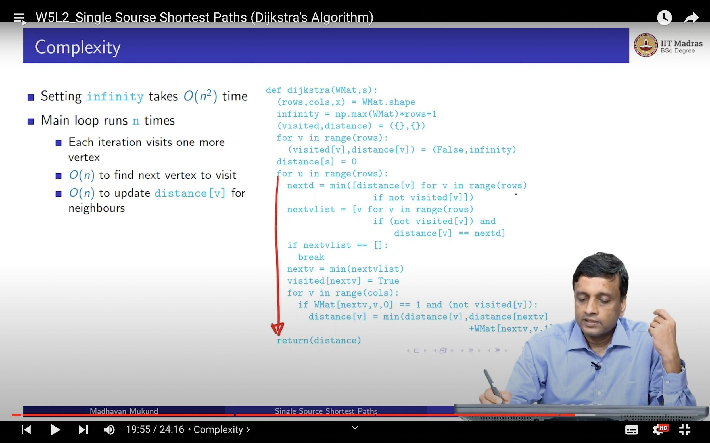

— Derek Sivers
Developers are good at this stuff!
They make their code someone else's problem.
None of this is about talent. It's about which failures you've been burned by often enough to plan around.
Indirection (also called dereferencing) is the ability to reference something using a name, reference, or container instead of the value itself.
— Butler Lampson / David Wheeler
— AnacondaCon 2019
A 3-step process:
One giant function is a black box even to the person who wrote it. Small, named, single-purpose functions are the unit developers can test, read, and safely hand off.
A function you can't name in five words is a function doing too much.

— Madhavan Mukund, IIT Madras BS Degree, "Single Source Shortest Paths"
— Donald Knuth, on Literate Programming
"Easily" meaning not without consequences, but predictably.
A real team, an anonymised number, and about 600 machines that answered the question for us — without meaning to.
The real figure is redacted. So picture a clean, imaginary $1,000,000/year. Every number that follows is relative to that imaginary million.
Glossary: one GPU-hour is one machine running for one hour. "Utilisation" is the % of that hour spent doing useful work — the rest is idle, but billed the same.
The bar for "doing nothing" is under 5% utilisation — but much of it was literally 0%. On a typical day half the running machines sat at zero the entire day, and 293 of 510 GPU machines never ran a single workload across the whole audit — provisioned, billed, untouched.
Bucket every machine by its average GPU utilisation and the curve is bimodal — a hump near 0% (parked notebooks) and a hump near 100% (real training runs), almost nothing between. People wanted a pet (tended by hand) or cattle (disposable) — and defaulted to pets.
Per-machine averages across 146 days of hourly telemetry — 34,246 samples, 609 machines, 510 GPU-equipped.
A bot posted GPU spend and utilisation to a shared channel every day for seven months. Spend and fleet size climbed. Average utilisation never moved — it sat near 25% and slipped toward 17%. Communicating the truth for seven months didn't build the habit.
Bars: tracked compute $/day. Line: fleet-average GPU utilisation.
This is the uncertainty / async / distributed-resources gap from Part 1 — with the invoice attached.
We never told anyone to become a better engineer. We made the consequences surface quickly and unavoidably — and the habits fixed themselves.
A pull request is supposed to be a developer explaining their reasoning to a teammate — Habit One from Part 2, out loud. Here, the PR was the experiment, the comment thread was the lab notebook, and review — the one practice that pays — was skipped.
So the platform literally could not answer "who spent what?" No owner, so no control. The same rot showed everywhere: a departed employee's GPU pod still running after access was revoked; "why are so many people admin?"; any dev able to start or kill any machine.
"Someone else's problem" is supposed to mean clearly owned, so anyone can safely pick it up. Here it meant no one owned it at all — which is the failure mode, not the goal.
Review, reproducibility, ownership — the practices every tool quietly assumes, and the ones this team hadn't built yet.
The team imported one habit straight from software engineering: fail fast.
"Make each module fail-fast — either it does the right thing, or it stops." — Jim Gray, "Why Do Computers Stop and What Can Be Done About It?", 1985
No console, no manual login. A reviewed commit in a shared repo is the only way to start a job — the machine runs it unattended and disposes of itself when done.
a reviewed commit is the only way to start a job — no console, no manual login
the code runs by itself; it stops itself when done or idle
the model / results move to cheap, durable storage before the machine dies
the expensive machine is deleted; nothing valuable was ever only on it
This is Habit One from Part 2 (build an interface) applied to a whole machine, not just a function.
Every run pinned to a reviewed commit. And "autokill": if a run is going to fail, it gets stopped before it costs much — automatically, not because someone happened to notice.
"can you shut this pod down?"
"extend my auto-shutdown 3 hrs"
"what is this pod — $2/hr, idle?"
Real chat logs — humans doing autokill's job by hand, one Slack message at a time. Now struck through, because the fix turned a manual ritual into a system property.
From 668 managed jobs. The last row is honest: even a good fix has a gap. That's not a flaw in the story — it's the next thing to go build.
Rollout was a brawl — people resisted, argued, and access nearly got pulled over it. A pilot ironed out the kinks. Then, slowly, the habits took.
Not a framework. Not a new tool to learn. Five habits, aimed at you — not your manager.
"What's obvious to you is amazing to others." — Derek Sivers
"Boss, GPU top-up karwa do."
Every gap in Part 1 has a fix in Part 2, and a receipt in Part 3. None of it needed genius. It needed a process that didn't depend on anyone's willpower.
"If you build a man a fire, you keep him warm for the night. But if you set a man on fire, you keep him warm for the rest of his life." — Terry Pratchett (an argument, it turns out, for systems over willpower.)
Thank you. · Questions — especially the ones where you think I'm wrong.